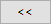

Nutzer von Mac-Tastaturen beachten bitte, dass die Tastenkombinationen nicht die gleichen sind wie auf einer Windows-Tastatur. In diesen Vergleichstabellen können Sie diese Tasten nachschlagen.
In Origin können Sie verschiedene Tastenkombinationen verwenden, um schnell eine Operation durchzuführen. Die Tastenkombination besteht aus Hilfstasten (wie Strg, Alt oder Shift) und einer weiteren Taste (wie ein Buchstaben, eine Pfeil- oder Funktionstaste).
Nutzer von Mac-Tastaturen beachten bitte, dass die Tastenkombinationen nicht die gleichen sind wie auf einer Windows-Tastatur. In diesen Vergleichstabellen können Sie diese Tasten nachschlagen. |
Liste der Schnelltasten/Tastenkombinationen in Origin
| Tastenkombination | Menü/Operation | Kontext |
|---|---|---|
| Strg + N | Datei: Neu... | Der Dialog Neues Fenster wird aufgerufen. |
| Strg + Alt + I | Datei: Neu: Bild: Bild/Video ... | Der Dialog Bilder wird geöffnet. Weitere Einzelheiten finden Sie auf dieser Seite. |
| Strg + Alt + T | Datei: Neu: Bild: Mehrere Bilddateien ... | Der Dialog Mehrere Bilder verbinden wird geöffnet. Weitere Einzelheiten finden Sie auf dieser Seite. |
| Strg + Alt + L | Datei: Neu: Bild: Web-Bild ... | Der Dialog Bild-URL eingeben wird geöffnet. |
| Strg + O | Datei: Öffnen... | Der Dialog Öffnen wird geöffnet. |
| Strg + P | Datei: Drucken... | Der Dialog Drucken wird geöffnet. |
| Strg + S | Datei: Projekt speichern | Das aktuelle Projekt wird gespeichert. (Wenn das Projekt nie gespeichert wurde, rufen Sie den Dialog Speichern unter... auf. |
| Strg + F4 | Das aktive Arbeitsblatt/Diagramm/Matrixfenster wird geschlossen. | |
| Strg + F6 | Es wird zum nächsten Fenster gewechselt. | Das nächste Fenster wird aktiviert. |
| Alt + 1 | Ansicht: Projekt Explorer | Der Projekt Explorer wird geöffnet. |
| Alt + 2 | Ansicht: Ergebnisse | Das Fenster Ergebnisse wird geöffnet. |
| Alt + 3 | Ansicht: Befehlsfenster Fenster : Befehlsfenster |
Das Befehlsfenster wird geöffnet. |
| Alt + 4 | Ansicht: Code Builder | Der Code Builder wird geöffnet. |
| Alt + 5 | Ansicht: Schnellhilfe | Die Schnellhilfe wird geöffnet. |
| Alt + 6 | Ansicht: Meldungsprotokoll | Das Fenster Meldungsprotokoll wird geöffnet. |
| Alt + 7 | Ansicht: Praktische Hinweise | Das Fenster Praktische Hinweise wird geöffnet. |
| Alt + 8 | Ansicht: Objektverwaltung | Die Objektverwaltung wird geöffnet, |
| Alt + 9 | Ansicht: Apps | Das Fenster Apps wird geöffnet. |
| Alt + Shift + 3 | Fenster: Skriptfenster | Das Skriptfenster wird geöffnet. |
| Strg + Alt + Z | Fenster: Zum letzten Fenster zurückkehren | Sie kehren zum vorherigen aktiven Fenster zurück. |
| F2 | Projekt Explorer: Mit der rechten Maustaste auf Ordner bzw. Fenster klicken und Umbenennen wählen. | Das ausgewählte Element im Projekt Explorer wird umbenannt. Wenn das Fenster ausgewählt ist, ändern Sie den Kurznamen (SN)/Langnamen (LN) des Fensters, abhängig davon, welchen Namen Sie festgelegt haben, als Sie das letzte Mal den direkten Bearbeitungsmodus zum Umbenennen eines Fensters verwendet haben. Sie können auch Strg+N verwenden, um zwischen LN und SN zu wechseln. Weitere Informationen finden Sie hier. |
| Strg + N | Sie können zwischen den Modi LN (Langname) und SN (Kurzname) wechseln, wenn Sie den Namen der Arbeitsmappe im Projekt Explorer direkt bearbeiten. | |
| F3 | Projekt Explorer: Rechtsklick auf Ordner (Suchen) | Der Dialog Suchen für den ausgewählten Ordner wird geöffnet, wenn der Projekt Explorer aktiv ist. |
| Strg + Tab | Es kann zwischen den verschiedenen Fenstern im gleichen Ordner, eiinschließlich der frei beweglichen Fenster, gewechselt werden. Auf dem Fenster des zuletzt aktiven Fensters gewechselt und auf dem ersten aktiven Fenster geendet. | |
| Strg + Shift + G | Es kann zwischen den verschiedenen Fenstern im gleichen Ordner, eiinschließlich der frei beweglichen Fenster, gewechselt werden. Die Reihenfolge des Fensterwechsels ist umgekehrt zu Strg + Tab. | |
| Alt + Shift + R | Klicken Sie mit der rechten Maustaste auf die Titelleiste der externen Excel-Arbeitsmappe und wählen Sie Origin aktualisieren. | Aktualisieren Sie Origin über das externe Excel in Origin. |
| Tastenkombination | Menü/Operation | Kontext |
|---|---|---|
| Strg + K | Daten: Aus Datei importieren: Einzelnes ASCII... | Der Dialog ASCII wird geöffnet. (Arbeitsblatt, Matrixblatt, Diagramm) |
| Strg + 3 | Daten: Aus Datei importieren: Importassistent | Der Importassistent wird geöffnet. (Arbeitbslatt, Matrix, Diagramm) |
| Strg + 4 | Daten: Direkt neu importieren | Eine Datendatei wurde in das aktive Arbeitsblatt importiert. |
| Strg + T | Ansicht: Symbolleisten | Der Dialog Anpassen wird geöffnet. |
| Strg + U | Einstellungen: Optionen | Der Dialog Optionen wird geöffnet. |
| F7 | Einstellungen: Designs verwalten | Der Dialog Designs verwalten wird geöffnet. |
| F8 | Hilfsmittel: Fitfunktionen erstellen | Der Dialog Fitfunktionen erstellen wird geöffnet. |
| F9 | Hilfsmittel: Fitfunktionen verwalten | Der Dialog Fitfunktionen verwalten wird geöffnet. |
| F10 | Hilfe: App-Center | Das App-Center wird geöffnet. |
| F11 | Hilfe: Lernzentrum | Das Lernzentrum wird geöffnet. |
| Strg + Shift + O | Hilfsmittel: Farbmanager | Der Farbmanager wird geöffnet. |
| Strg + Shift + P | Konnektivität: Python-Konsole | Sie schalten die Python-Konsole ein oder aus. |
| Alt + F5 | Führt den Abschnitt [Main] von User Files\Custom.ogs aus. | Wie die Schaltfläche Benutzerdefinierte Routine |
| Strg + 0 | Klicken Sie auf die Schaltfläche Autom. Neuberechnung pausieren |
Die Schaltfläche Neuberechnen (grün oder gelb) ist gedimmt und Operationen wurden auf Pause gesetzt bis Sie Strg + 0 drücken oder erneut auf die Schaltfläche klicken. |
| Tastenkombination | Menü/Operation | Kontext |
|---|---|---|
| Strg + F | Bearbeiten: Suchen | Die Registerkarte Suchen im Dialog Suchen und Ersetzen wird geöffnet. (Arbeitsmappe, Diagramm) Der einfache Dialog Suchen wird geöffnet. (Notizen) |
| Strg + G | Bearbeiten: Gehe zu... | Der Dialog dlgRowColGoto wird geöffnet. (Arbeitsmappe) |
| Strg + H | Bearbeiten: Ersetzen | Die Registerkarte Ersetzen im Dialog Suchen und Ersetzen wird geöffnet. (Arbeitsmappe, Matrix) Der einfache Dialog Ersetzen wird geöffnet. (Notizen) |
| Strg + V | Bearbeiten: Einfügen (auch in vielen Kontextmenüs) | Inhalt aus der Zwischenablage wird eingefügt. |
| Strg + X | Bearbeiten: Ausschneiden | Die ausgewählten Objekte werden ausgeschnitten. (Sie können auch in die Zwischenablage eingefügt werden.) |
| Strg + Z | Bearbeiten: Rückgängig | Die letzte Aktion wird rückgängig gemacht. Siehe auch diesen Hinweis. |
| Strg + Y | Bearbeiten: Wiederholen | Die letzte Aktion wird wiederholt. |
| Strg + Alt + B | Bearbeiten: Schaltflächen bearbeiten | Wechseln Sie in den Bearbeitungsmodus der Schaltflächen. |
| Strg + Alt + V | Bearbeiten: Verknüpfung einfügen oder Rechtsklick auf eine Zelle (Verknüpfung einfügen) | Dazu muss zuvor ein Objekt kopiert worden sein. |
| Entf | Bearbeiten: Entfernen | Dazu muss zuvor ein Objekt ausgewählt worden sein. |
| Strg + Klick | Wählen Sie nicht zusammenhängende Zellen aus oder heben Sie die Auswahl der ausgewählten Zellen auf. | Bei aktivem Arbeitsblatt oder Matrix |
| Strg + Entf | Geben Sie NANUM ("--") ein. | Wenn Arbeitsblattzellen ausgewählt wurden. |
| Alt + Doppelklick | Klicken Sie mit der rechten Maustaste auf das Objekt und wählen Sie Einstellungen. | Dazu muss zuvor ein Objekt ausgewählt worden sein. |
| Alt + X | Geben Sie bei der Eingabe von Sonderzeichen in Textbeschriftungen und Arbeitsblattzellen, den vierstelligen Hexwert des Unicodes ein und drücken Sie sofort ALT + X. | Während der "direkten" Textbearbeitung. |
| Verschiebung | N/A | Beim Verwenden von Minisymbolleisten zum Bearbeiten von Diagramm- oder Blatteigenschaften stellt das Drücken der Shift-Taste eine Symbolleiste wieder her, die ausgeblendet war. Einmalige Verwendung. |
| Kopieren | ||
| Strg + C | Bearbeiten: Kopieren: Kopieren (auch in vielen Kontextmenüs) | Bei ausgewähltem Objekt |
| Strg + Alt + C | Bearbeiten: Kopieren: Kopieren (volle Genauigkeit) (bei aktiver Matrix/aktivem Arbeitsblatt) |
Zellen werden im Matrix-/Arbeitsblattfenster markiert. |
| Strg + Shift + C | Bearbeiten: Kopieren: Kopieren (einschließlich Beschriftungszeilen) | Die Spalte(n) mit den Beschriftungszeilen werden kopiert, wenn eine oder mehrere Spalten markiert sind. |
| Strg + J | Bearbeiten: Kopieren: Kopieren (Formel) | Die Spalte(n) mit der Formel werden kopiert, wenn eine oder mehrere Spalten markiert sind. |
| Strg + Shift + J | Bearbeiten: Kopieren (Beschriftungszeilen) | Es werden nur die Beschriftungszeilen der Spalte(n) kopiert, wenn eine oder mehrerer Spalten markiert sind. |
| Strg + Alt + J | Bearbeiten: Kopieren: Kopieren (Formel + Beschriftungszeilen) | Die Spalte(n) mit den Beschriftungszeilen und der Formel werden kopiert, wenn eine oder mehrere Spalten markiert sind. |
| Strg + Shift + A | Bearbeiten: Kopieren: Alle kopieren | Die Spalte(n) mit den Daten, Beschriftungszeilen und der Formel werden kopiert, wenn eine oder mehrere Spalten markiert sind. |
| Strg + Shift + G | Bearbeiten: Kopieren: Als Tabelle kopieren (HTML/EMF) | Wenn ein Arbeitsblatt aktiv ist, kopieren Sie das gesamte Blatt als HTML-/EMF-Tabelle. |
| Tastenkombination | Menü/Operation | Kontext |
|---|---|---|
| Strg + D | Spalte: Neue Spalten hinzufügen... | Der Dialog Neue Spalten hinzufügen wird geöffnet. (Arbeitsmappe, Matrix) |
| Strg + H | Infovariable einfügen | Bei einem im direkten Bearbeitungsmodus ausgewählten Textobjekt wird das Dialogfeld Variable einfügen geöffnet. |
| Strg + L | Daten: Name definieren (bei aktivem Arbeitsblatt) | Öffnen Sie bei aktivem Arbeitsblatt den Dialog Neuer Name. |
| Einfügen: Latex-Gleichung (bei im direkten Bearbeitungsmodus ausgewählter Arbeitsblattzelle) | Öffnen Sie bei im direkten Bearbeitungsmodus ausgewählter Arbeitsblattzelle (Beschriftungszeile oder Datenzelle) den Dialog Latex-Gleichungseditor. | |
| Strg + M | Öffnet während der Bearbeitung des Zelleninhalts die Abbildung Symbole. | |
| Strg + Q | Spalte: Spaltenwerte errechnen | Der Dialog Werte setzen wird geöffnet. (Arbeitsblatt, Matrix) |
| Strg + Shift + Y | Analyse: Anpassen: Nichtlinearer Fit | Der Dialog NLFit wird geöffnet. (Arbeitsblatt, Diagramm) |
| Strg + Shift + Q | Spalte: Werte für mehrere Spalten festlegen | Der Dialog Werte setzen - Mehrere Spalten wird geöffnet. (Arbeitsblatt) |
| Strg + Shift + U | Klicken Sie mit der rechten Maustaste auf den grauen Bereich des Arbeitsblatts, Ansicht: F(x) | Formelzeile im Arbeitsblatt verbergen/zeigen |
| F4 | Format -> Worksheet | Der Dialog Arbeitsblatteigenschaften wird geöffnet. |
| Strg + Pos1 | Sie gehen zur Zelle in Zeile 1, Spalte 1 des aktiven Blatts. | |
| Strg + Ende | Sie gehen zur Telle in der letzten belegten Spalte und der letzten belegten Zeile im aktiven Blatt. | |
| Strg + F3 | Daten: Namen verwalten | Öffnet den Dialog Bereiche mit Namen verwalten. |
| Strg + F5 | Werte für alle Spalten festlegen | Führen Sie alle Formeln im Arbeitsblatt/in der Matrix erneut aus. |
| Strg + Bild aufwärts/abwärts | Sie wechseln zwischen verschiedenen Arbeitsblättern innerhalb der aktuellen Arbeitsmappe. | |
| Strg + Abwärts-Pfeil | Sie gehen zur letzten belegten Zelle in der Spalte.† | |
| Strg + Aufwärts-Pfeil | Sie gehen zur ersten belegten Zelle in der Spalte.† | |
| Strg + Shift + Pfeil LINKS | Sie erweitern die Auswahl (gesamte Spalten oder einen Zellenblock) bis zur Spalte, die sich am weitesten links befindet. Falls ein Zellenblock ausgewählt ist, deckt die Auswahl nur den gleichen Zeilenbereich ab.† | |
| Strg + Shift + Pfeil RECHTS | Sie erweitern die Auswahl (gesamte Spalten oder einen Zellenblock) bis zur Spalte, die sich am weitesten links befindet. Falls ein Zellenblock ausgewählt ist, deckt die Auswahl nur den gleichen Zeilenbereich ab.† | |
| Shift + Rechts-Pfeil | Sie wählen die Spalte links oder rechts von der aktuell markierten Spalte aus. Jedes Drücken der Pfeiltaste wählt eine weitere Spalte aus. Durch Halten scrollen Sie durch die Auswahl. | |
| Shift + Aufwärts/Abwärts-Pfeil | Sie wählen die Zeile oberhalb oder unterhalb der aktuell markierten Zeile aus. Jedes Drücken der Pfeiltaste wählt eine weitere Zeile aus. Durch Halten scrollen Sie durch die Auswahl. | |
| Strg + Shift + Abwärts-Pfeil | Sie erweitern die Auswahl (gesamte Zeilen oder einen Zellenblock) bis zur letzten Zeile. Falls ein Zellenblock ausgewählt ist, deckt die Auswahl nur den gleichen Spaltenbereich ab.† | |
| Strg + Shift + Aufwärts-Pfeil | Sie erweitern die Auswahl (gesamte Zeilen oder einen Zellenblock) bis zur ersten verwendeten Zeile. Falls ein Zellenblock ausgewählt ist, deckt die Auswahl nur den gleichen Spaltenbereich ab.† | |
| Strg + Shift + Pos1 | Sie erweitern die Auswahl auf die Zelle in Zeile 1, Spalte 1. | |
| Strg + Shift + Ende | Sie erweitern die Auswahl bis zur letzten Zelle in der am weitesten rechts stehenden belegten Spalte und dann bis zur letzten belegten Zeile im Blatt. | |
| Alt + Enter | Klicken Sie doppelt in eine Telle, um den direkten Bearbeitungsmodus aufzurufen, und drücken Sie Alt + Enter, um eine neue Zeile nach dem Cursor einzugeben.†† | |
| Strg + Enter |
|
†Wie bei MS Excel werden diese Operationen durch leere Zellen und fehlende Werte gestört. Um das Standardverhalten zu modifizieren und die Auswahl über die leeren Zellen oder fehlenden Werte hinaus zu erweitern, siehe die Dokumentation der LabTalk-Systemvariable @ESL.
††Seit Origin2021 wurden die Tastenkombinationen dieser Aktionen gewechselt, um denen von MS Excel zu entsprechen. Um zum alten Verhalten zurückzukehren, siehe die Dokumentation der LabTalk-Systemvariablen @FCA.
| Tastenkombination | Menü/Operation | Kontext |
|---|---|---|
| Strg + Q | Spalte: Spaltenwerte errechnen | Der Dialog Werte setzen wird geöffnet. (Arbeitsblatt, Matrix) |
| Strg + Shift + C | Ansicht -> Spalte/Zeile zeigen | Bei aktiver Matrix |
| Strg + Shift + D | Ansicht -> Datenmodus | Eine Matrix im Bildmodus ist aktiv. |
| Strg + Shift + I | Ansicht -> Bildmodus | Eine Matrix im Datenmodus ist aktiv. |
| Strg + Shift + N | Miniaturbilder zeigen | Eine Matrix ist aktiv. |
| Strg + Shift + T | Hilfsmittel -> ROI-Hilfsmittel zeigen | Eine Matrix oder ein Bild ist aktiv. |
| Strg + Shift + X | Ansicht -> X/Y zeigen, wenn eine Matrix aktiv ist. | Der reale X/Y-Wert in der aktuellen Matrix wird angezeigt. |
| Tastenkombination | Menü/Operation | Kontext |
|---|---|---|
| Strg + A | Markieren Sie alle Layer in den aktuellen Grafiken. Wenn das Fenster ein Layout ist, wählen Sie alle Objekte aus (Beschriftung, Diagramm, Arbeitsblatt...). | |
| Strg + Enter | Sie bleiben im direkten Bearbeitungsmodus. | Bei ausgewähltem Textobjekt im direkten Bearbeitungsmodus. |
| Strg + G | Datei: Grafiken exportieren: Dialog öffnen | Der Dialog Import and Export:expGraph (Diagrammexport) wird für das aktuelle Diagrammfenster geöffnet. |
| Strg + H | Einfügen: Infovariable | Bei einem im direkten Bearbeitungsmodus ausgewählten Textobjekt wird das Dialogfeld Variable einfügen geöffnet. |
| Strg + L | Einfügen: LaTeX-Gleichung | Bei einem im direkten Bearbeitungsmodus ausgewählten Textobjekt wird der Dialog LaTeX-Gleichungseditor geöffnet. |
| Strg + J | Bearbeiten: Seite kopieren | Bei aktivem Diagramm- oder Layoutfenster |
| Strg + Alt + J | Bearbeiten: Seite als Bild kopieren | Bei aktivem Diagramm- oder Layoutfenster |
| Strg + L | Grafik: Legende: Legende rekonstruieren | Eine Diagrammlegende wird erneut erstellt. (Diagramm) |
| Strg + R | Grafik: Neu skalieren | Skalierungen werden angepasst, um alle Daten im Diagramm zu zeigen. (Diagramm) |
| Strg + M | Der Dialog Abbildung Symbole wird aufgerufen. | Ein Textobjekt ist im direkten Bearbeitungsmodus ausgewählt. |
| Strg + Y | Analyse: Anpassen: Nichtlinearer Fit | Der Dialog NLFit wird geöffnet. (Arbeitsblatt, Diagramm) |
| Strg + 1 | Ansicht: Seitenansicht | Ein Diagramm- oder Layoutfenster ist aktiv. |
| Strg + 2 | Ansicht: Druckansicht | Ein Diagramm- oder Layoutfenster ist aktiv. |
| Strg + 4 | Der Cursor wird in den Datenauswahlmodus gesetzt. | Ein Diagrammfenster ist aktiv. |
| ` (Backquote, alias Akut) | Achsenskalierung verkleinern | Ein Diagrammfenster ist aktiv. Wenn das Hilfsmittel Achsenskalierung vergrößern verwendet wurde, verkleinern Sie die Achsenskalierung für jeden Vergrößerungsschritt jeweils ein Mal. |
| 1 | Der Cursor wird in den Modus Achsenskalierung vergrößern gesetzt. | Ein Diagrammfenster ist aktiv. |
| 2 | Der Cursor wird in den Modus Bildschirmkoordinaten gesetzt. | Ein Diagramm- oder Layoutfenster ist aktiv. Klicken Sie auf die Seite, um die Koordinaten zu lesen. |
| 3 | Der Cursor wird in den Modus Datenkoordinaten gesetzt. | Ein Diagrammfenster ist aktiv. Klicken Sie auf den Datenpunkt, um die Datenkoordinaten zu lesen. |
| 4 | Der Cursor wird in den Datenauswahlmodus gesetzt. | Ein Diagrammfenster ist aktiv. Klicken Sie auf die Datenzeichnung, um Markierungen zu zeichnen. Positionieren Sie den Cursor und klicken Sie dann doppelt oder drücken Sie Enter, um die Markierung zu setzen. |
| 5 | Der Cursor wird in den Modus Daten zeichnen gesetzt. | Ein Diagrammfenster ist aktiv. Klicken Sie doppelt auf das Diagramm, um einen Datenpunkt zu setzen. Wiederholen Sie den Vorgang je nach Wunsch. Drücken Sie Escape, wenn Sie fertig sind. |
| 6 | Der Cursor wird in den Modus des Hilfsmittel Text einfügen gesetzt. | Ein Diagrammfenster ist aktiv. Klicken Sie auf das Diagramm, um die Textposition und den -typ einzurichten. Klicken Sie außerhalb des Textobjekts, wenn Sie fertig sind. |
| 7 | Der Cursor wird in den Modus des Hilfsmittels Pfeil einfügen gesetzt. | Ein Diagrammfenster ist aktiv. Klicken Sie und ziehen Sie mit der Maus im Diagramm, um ein Pfeilobjekt zu zeichnen. |
| 8 | Der Cursor wird in den Modus des Hilfsmittels Gekrümmten Pfeil einfügen gesetzt. | Ein Diagrammfenster ist im aktuellen Diagrammfenster aktiv. |
| 9 | Hilfsmittel Linie einfügen (bei aktivem Diagramm) | Ein Diagrammfenster ist aktiv. Es wird eine Linie im aktuellen Diagrammfenster eingefügt. |
| F2 | Format->Seiteneigenschaften | Die Ebene Seiteneigenschaften des Dialogs Details Zeichnung für das aktuelle Diagrammfenster wird geöffnet. |
| Geben Sie den direkten Bearbeitungsmodus ein. | Bei ausgewähltem Textobjekt. | |
| F5 | Grafik: Grafik aktualisieren | Das Diagrammfenster wird neu gezeichnet. |
| F12 | Grafik->Layerinhalt | Der Dialog Layerinhalt für das aktuelle Diagrammfenster wird geöffnet. |
| Strg + Shift + J | Ansicht -> Ganzer Bildschirm | Wenn ein Diagrammfenster aktiv ist. |
| Strg + Shift + E | Grafik: Seite an Layer anpassen | Das zuletzt verwendete Design wird angewendet, um die Seite direkt an den Layer anzupassen, ohne den Dialog zu öffnen. |
| Pfeil nach oben / Pfeil nach unten | Zeichnung wechseln | Wenn das Hilfsmittel Datenkoordinaten im Diagrammfenster verwendet wird. |
| Pfeil nach links / Pfeil nach rechts | Die Datenauswahl wird entlang des Diagramms nach links oder rechts verschoben. | Wenn ein Datenpunkt auf dem Diagramm mit dem Hilfsmittel Datenkoordinaten ausgewählt wurde. Hinweis: Es gibt eine Anzahl von Systemvariablen, die die Beschleunigung der Pfeiltaste und das Dateninkrement für die Datenkoordinaten steuern. Weitere Informationen finden Sie in der Zusammenfassungstabelle unter Werte der Koordinaten im Diagramm lesen. |
| Strg + Enter |
Wenn Sie ein Bild in ein Diagramm einfügen, klicken Sie doppelt darauf, um ein Bildfenster aufzurufen. Drücken Sie dann Strg + Enter, um die Änderungen zu übernehmen, und das Element zu schließen. Dieses Verhalten ist das gleiche wie beim Klicken auf die Schaltfläche Zurück oben rechts. |
| Tastenkombination | Menü/Operation | Kontext |
|---|---|---|
| Strg + Enter |
Wenn Sie ein Bild in ein Layout einfügen, klicken Sie doppelt darauf, um ein Bildfenster aufzurufen. Drücken Sie dann Strg + Enter, um die Änderungen zu übernehmen, und das Element zu schließen. Dieses Verhalten ist das gleiche wie beim Klicken auf die Schaltfläche Zurück oben rechts. |
Hinsichtlich der Diagrammseite können diese Aktionen getrennt werden in (1) die Aktionen, die die Achsenskalierungen verändern, und (2) diejenigen, die die Achsenskalierungen NICHT verändern. Stellen Sie für Aktionen, die die Achsenskalierungen verändern (z. B. Achsenskalierung vergrößern/verkleinern), den ursprünglichen Zustand des Diagramms wieder her, indem Sie Strg + R drücken; für Aktionen, die Achsenskalierungen belassen, wie sie sind (z. B. Vergrößern/Verkleinern), stellen Sie den Ursprungszustand mit Strg + W wieder her. Strg + W funktioniert auch für 3D-openGL-Diagramme, Layoutseiten und Matrixbilder. |
Nehmen Sie für die folgende Tabelle an, dass das Hilfsmittel Zeiger  ausgewählt ist, es sei denn, dies wird anders gekennzeichnet.
ausgewählt ist, es sei denn, dies wird anders gekennzeichnet.
| Tastenkombination | Menü/Operation | Kontext |
|---|---|---|
| Q | Frame hinzufügen | Hilfsmittel Animation erstellen zum Erstellen einer Animation verwenden |
Diese frei bewegliche Symbolleiste kann für 3D-openGL-Diagramme aktiviert werden, indem Sie einmal innerhalb des Diagrammlayers klicken (Hinweis: Klicken Sie nicht auf die eigentliche Datenzeichnung).
Durch Drücken von Strg + A werden alle Diagrammlayer ausgewählt. In einem 3D-OpenGL-Diagramm hat dies den Effekt, dass die frei bewegliche 3D-Schaltflächengruppe angezeigt wird. Wenn die Schaltflächengruppe angezeigt wird, verwenden Sie die TAB-Taste, um durch die verfügbaren Hilfsmittel zu scrollen. |
| Tastenkombination | Menü/Operation | Kontext |
|---|---|---|
| Position der frei beweglichen 3D-Schaltflächengruppe festlegen | ||
| N/A | Fixieren Sie die Position der Symbolleiste. | Befestigen Sie die bewegliche 3D-Schaltflächengruppe an der oberen rechten Ecke des Diagrammlayers. |
| Diagrammlayer verschieben | ||
| Pfeiltasten | Verschieben Sie den Diagrammlayer (einschließlich alle angehängten Objekte) auf der Diagrammseite. | Wenn diese Schaltfläche aktiv ist, verwandelt sich das Hilfsmittel Zeiger in , wenn es sich innerhalb des 3D-"Würfels" befindet. Ziehen Sie die Maus oder verwenden Sie die Pfeiltasten, um den Layer vertikal oder horizontal zu verschieben. |
| Ein 3D-Diagramm in der Größe verändern und dabei das Seitenverhältnis beibehalten | ||
| X + Pfeiltaste | Die Größe des 3D-Diagramms wird in X-Richtung geändert. | Wenn diese Schaltfläche aktiv ist, werden die XYZ-Achsen in der Mitte des 3D-Würfels angezeigt. Verwenden Sie die aufgeführten Tastenkombinationen, um den Layer in der Seite zu vergrößern oder zu verkleinern. |
| Y + Pfeiltaste | Die Größe des 3D-Diagramms wird in der Y-Dimension geändert. | |
| Z + Pfeiltaste | Die Größe des 3D-Diagramms wird in der Z-Dimension geändert. | |
| Shift + X + Pfeiltaste | Die Größe des 3D-Diagramms wird in der YZ-Ebene geändert. | |
| Shift + Y + Pfeiltaste | Die Größe des 3D-Diagramms wird in der XZ-Ebene geändert. | |
| Shift + Z + Pfeiltaste | Die Größe des 3D-Diagramms wird in der XY-Ebene geändert. | |
| W + Pfeiltaste | Die Größe des 3D-Diagramms wird in eine beliebige Richtung geändert. | |
| 3D-Diagramme mit den frei beweglichen 3D-Schaltflächen drehen | ||
| X + Pfeiltaste | Das 3D-Diagramm wird um die X-Achse gedreht. | Wenn diese Schaltfläche aktiv ist, wird ein Satz von 4 Drehradien (XYZ, Bildschirm) in der Mitte des 3D-Würfels angezeigt. Verwenden Sie die aufgelisteten Tastenkombinationen oder fahren Sie mit der Maus über einen Drehradius und ziehen Sie an der Maus, um das Diagramm auf der Seite zu drehen. |
| Y + Pfeiltaste | Das 3D-Diagramm wird um die Y-Achse gedreht. | |
| Z + Pfeiltaste | Das 3D-Diagramm wird um die Z-Achse gedreht. | |
| Q + Pfeiltaste | Das 3D-Diagramm wird auf Bildschirmebene gedreht. | |
| W + Pfeiltaste | Das 3D-Diagramm wird um eine beliebige Achse gedreht. | |
| 3D-Diagramme mit der R-Taste drehen | ||
| R + Maus | Ziehen Sie am 3D-Diagramm in eine beliebige Richtung, um es zu drehen. | Drücken Sie "R", bevor Sie andere Tasten drücken. Wenn Sie mit dem Cursor über ein 3D-Diagramm fahren, während Sie "R" drücken, verwandelt sich das Hilfsmittel Zeiger |
| R + Strg + Maus/Pfeiltaste | Das 3D-Diagramm wird um die X-Achse gedreht. | |
| R + Shift + Maus/Pfeiltaste | Das 3D-Diagramm wird um die Y-Achse gedreht. | |
| R + Strg + Shift + Maus/Pfeiltaste | Das 3D-Diagramm wird um die Z-Achse gedreht. | |
| Das 3D-Diagramm wird in XY-Richtung verzerrt. | ||
| X + Pfeiltaste | Das 3D-Diagramm wird in X-Richtung verzerrt. | Wenn diese Schaltfläche aktiv ist, können Sie den Diagrammlayer in X- oder Y-Richtung verzerren. Hinweis: Diese Symbolleistenschaltfläche wird nicht angezeigt, bis Sie Abschneiden aktivieren auf der Registerkarte Sonstiges (Ebene Layer) des Dialogs Details Zeichnung aktiviert haben. |
| Y + Pfeiltaste | Das 3D-Diagramm wird in Y-Richtung verzerrt. | |
| Die Operationsschaltfläche wechseln | ||
| Tab | Wechseln Sie zwischen den Betriebsmodi: Modus Größe verändern und Modus Drehen. | Bei aktivem Diagrammlayer |
| Steuern Sie den Geschwindigkeitsfaktor des Inkrements. | ||
| i | Erhöhen Sie den Geschwindigkeitsfaktor um ein Inkrement von 5%. | Bei aktivem Diagrammlayer |
| d | Verringern Sie den Geschwindigkeitsfaktor um ein Inkrement von 5%. | Bei aktivem Diagrammlayer |
| Tastenkombination | Menü/Operation | Kontext |
|---|---|---|
| S + Maus/Pfeiltaste | Die Beleuchtungswinkel werden in horizontaler und vertikaler Ebene geändert. | Drücken Sie die "S"-Taste, während Sie mit der Maus über ein 3D-OpenGL-Diagramm fahren. Der Cursor wechselt seinen Modus. Ziehen Sie Ihre Maus oder verwenden Sie die Pfeiltasten, um die Richtung der Beleuchtungsquelle zu ändern. |
Halten Sie "S" gedrückt und verwenden Sie das Mausrad, um 3D-OpenGL-Diagramme zu verkleinern und zu vergrößern. Halten Sie "S" gedrückt und ziehen Sie an der Maus, um die Richtung der Beleuchtung zu ändern. |
| Tastenkombination | Menü/Schaltfläche/Aktion | Kontext |
|---|---|---|
| Strg + Q | Klicken Sie mit der rechten Maustaste und wählen Sie ROI hinzufügen. | Wenn ein Bildfenster aktiv ist: |
| Ein Bild in das Diagrammfenster einfügen | ||
| Strg + E | Klicken Sie mit der rechten Maustaste auf ein ROI-Feld und wählen Sie Abschneiden. | Wenn ein Bild in das Diagrammfenster eingefügt wurde (über Einfügen: Bild aus Datei oder Einfügen: Bild aus Bildfenster), öffnet ein Doppelklick auf das Bildobjekt ein separates Bildfenster. Wenn das Bildfenster aktiv ist und ein ROI-Feld hinzugefügt wurde: |
| Strg + F | Klicken Sie mit der rechten Maustaste auf ein ROI-Feld und wählen Sie Skalierung auf Diagramm anwenden. | Wenn ein Bild in das Diagrammfenster als Hintergrund eingefügt wurde (über Einfügen: Bild aus Datei oder Einfügen: Bild aus Bildfenster), können Sie es in einem separaten Bildfenster in der Objektverwaltung öffnen. Wenn das Bildfenster aktiv ist und ein ROI-Feld hinzugefügt wurde: |
| Bild mit mehreren Frames/Video im Bildfenster navigieren (Diese Tastenkombinationen nicht verwenden, wenn das Bild/Video abgespielt wird.) | ||
| ← /→ Pfeiltasten |  / | Navigiert zum vorherigen/nächsten Frame, wenn der Fokus auf dem Video liegt. Der Inkrementschritt ist 1. |
| Shift + ← /→ Pfeiltaste | Navigiert zum 5. vorherigen/nächsten Frame, wenn der Fokus auf dem Video liegt. Der Inkrementschritt ist 5. | |
| Shift + Strg + ← /→ Pfeiltaste | Navigiert schnell zum 20. vorherigen/nächsten Frame, wenn der Fokus auf dem Video liegt. Der Inkrementschritt ist 20. | |
| Strg + ← /→ Pfeiltaste | /  |
Navigiert zum ersten/letzten Frame. |
| Tastenkombination | Menü/Operation | Kontext |
|---|---|---|
| O | Das Ergebnis wird ausgegeben. | Drücken Sie bei aktivem Minitool auf dem Diagramm die Taste O, um eine neue Ausgabe zu erzeugen. Wenn es mehrere Minitools in dem Diagramm gibt, müssen Sie zuerst eines auswählen. |
| N | Die Ergebnisse für alle Kurven im aktiven Layer werden ausgegeben. | Die gleiche Operation wird auf alle Kurven im aktiven Layer angewendet und die Ergebnisse werden ausgegeben. |
| L | Die Ergebnisse für alle Layer wird ausgegeben. | Die gleiche Operation wird auf alle Kurven in allen Layern des Diagramms angewendet und die Ergebnisse werden ausgegeben. |
| Tastenkombination | Menü/Operation | Kontext |
|---|---|---|
| Strg + B | Fett ein-/ausschalten | Wenn Arbeitsblatt- oder Matrixzellen ausgewählt sind oder sich ein Textobjekt im Bearbeitungsmodus befindet. |
| Strg + G | Griechische Interpretation der Zeichen | Wenn ein Textobjekt im direkten Bearbeitungsmodus ist, kann mit dieser Taste umgeschaltet werden. Wenn der gesamte Text markiert wird, wird alles griechisch. |
| Strg + I | Kursiv ein-/ausschalten | Wenn Arbeitsblatt- oder Matrixzellen ausgewählt sind oder sich ein Textobjekt im Bearbeitungsmodus befindet. |
| Strg + U | Unterstrichen ein-/ausschalten | Wenn Arbeitsblatt- oder Matrixzellen ausgewählt sind oder sich ein Textobjekt im Bearbeitungsmodus befindet. |
| Strg + ">" | Text auswählen: Schrift vergrößern (oder Strg + Shift +".") | Markieren Sie Text im direkten Bearbeitungsmodus. |
| Strg + "<" | Text auswählen: Schrift verkleinern (oder Strg + Shift +",") | Markieren Sie Text im direkten Bearbeitungsmodus. |
| Strg + "+" auf Ziffernblock Strg + Shift + "=" |
Text auswählen: Hochgestellt | Markieren Sie Text im direkten Bearbeitungsmodus. |
| Strg + Shift + E | Format: Seite an Layer anpassen | Das zuletzt verwendete Design wird angewendet, um die Seite direkt an den Layer anzupassen, ohne den Dialog zu öffnen. |
| Strg + "=" | Text auswählen: Tiefgestellt | Markieren Sie Text im direkten Bearbeitungsmodus. |
| Strg + "-" auf Ziffernblock | Text auswählen: Hoch-/Tiefgestellt | Markieren Sie Text im direkten Bearbeitungsmodus. |
| Strg + ' Strg + P |
Ein Prime-Zeichen in voller Höhe wird hinzugefügt. | Wenn der direkte Bearbeitungsmodus aktiviert ist, ist entweder Textbeschriftung oder RichText für das Arbeitsblatt ausgewählt. Wenn der hochgestellte Text bereits eingeschaltet ist, wird er als kombiniertes Prime-Zeichen hinzugefügt. |
| Strg + Shift + ' Strg + Shift + P |
Ein doppeltes Prime-Zeichen (Sekundenzeichen) in voller Höhe wird hinzugefügt. | Wenn der direkte Bearbeitungsmodus aktiviert ist, ist entweder Textbeschriftung oder RichText für das Arbeitsblatt ausgewählt. Wenn der hochgestellte Text bereits eingeschaltet ist, wird er als kombiniertes doppeltes Prime-Zeichen hinzugefügt. |
| Tastenkombination | Menü/Operation | Kontext |
|---|---|---|
| Strg + Alt + M | Daten -> Datenbereich markieren | Markieren Sie die Datenzeichnung im Diagrammfenster. |
| Strg + Alt + N | Daten -> Datenmarkierer löschen | Dazu muss ein Datenbereich im Diagrammfenster markiert sein. |
| Strg + Shift + M | Daten -> Analysemarker -> Verbergen | Ein Bereich der Daten ist markiert und eine Analyse wird durchgeführt. |
| Tastenkombination | Menü/Operation | Kontext |
|---|---|---|
| Strg + Shift + F | Daten -> Position feststellen -> Erster Punkt | Nach der Anpassung des Diagramms |
| Strg + Shift + K | Daten -> Position feststellen -> Layersymbol | Nach der Anpassung des Diagramms |
| Strg + Shift + L | Daten -> Position feststellen -> Letzter Punkt | Nach der Anpassung des Diagramms |
| Tastenkombination | Menü/Operation | Kontext |
|---|---|---|
| Strg + Enter | Beim Bearbeiten des Kommentars für die Fenster im Unterbedienfeld des Projekt Explorers, drücken Sie Strg + Enter, um die Bearbeitung zu schließen. | |
| Strg + Shift + Ziehen mit der Maus der ausgewählten Fenster | Fenster im Projekt Explorer duplizieren |
Origin 2024 unterstützt das horizontale Scrollen mit dem Mausrad, auch in Diagramm-, Arbeitsmappen-, Matrix- und Bildfenstern.
| Tastenkombination | Menü/Operation | Kontext |
|---|---|---|
| Shift + Scrollrad | Scrollen Sie im Fenster nach rechts oder links. |